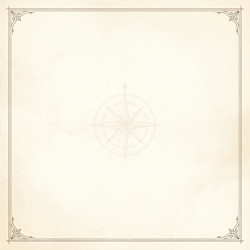
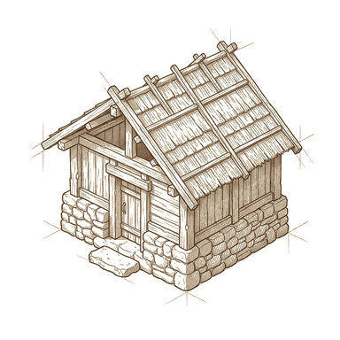
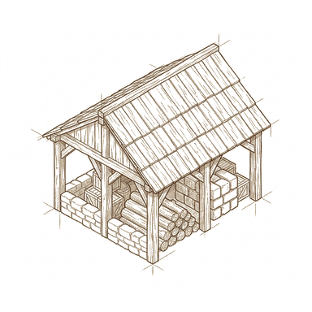

DAWN OF KIN · UI-0 R1 · PRANCHA DE IDENTIDADE VISUAL
Conceito B — Crônicas do Novo Mundo
Cartografia de expedição em papel washi quente, tinta nanquim sépia, bússola de latão, selos de lacre e plantas desenhadas à pena.
Assets 100% originais · Validado em Godot 4.7.2
1280×720 & 1920×1080 · Intel UHD Graphics 620
1280×720 & 1920×1080 · Intel UHD Graphics 620
1. Material Principal (9-Slice Godot)

Folha 9-slice em papel algodão/washi com filete duplo a nanquim e rosa-dos-ventos em marca d'água — contraste editorial superior sobre mapas verdes e florestas.
2. Paleta Cromática
Papel Washi
#F4ECDD
Nanquim
#241B14
Lacre
#8F3226
Musgo
#4B663A
3. Hierarquia Tipográfica
DAWN OF KIN — Título / Linhagem
Abrigo Básico · Casa Fundadora · Primavera
Texto funcional e contadores tabulares: Madeira 24 · Pedra 14 · Alimentos 18 · 42% (1 / 2)
4. Iconografia Original e Coerente
wood
stone
food
build
tasks
house
5. Botões e Estados de Interação (Normal · Hover · Ativo · Desabilitado)
Normal
Hover
Ativo (Tinta)
Desabilitado
6. Casa Fundadora & Emblema

Alden


Brena
7. Peça Assinatura & Silhueta Espacial


Polaridade clara editorial (Papel Washi + Nanquim + Selos de Lacre).
Rompe completamente com dashboards escuros; une bússola de expedição, etiquetas de campo e croquis arquitetônicos desenhados à pena — natural para o futuro arquipélago e névoa.
Rompe completamente com dashboards escuros; une bússola de expedição, etiquetas de campo e croquis arquitetônicos desenhados à pena — natural para o futuro arquipélago e névoa.